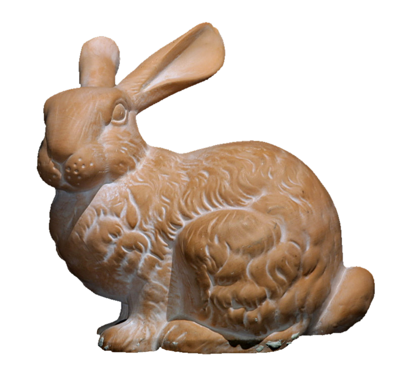
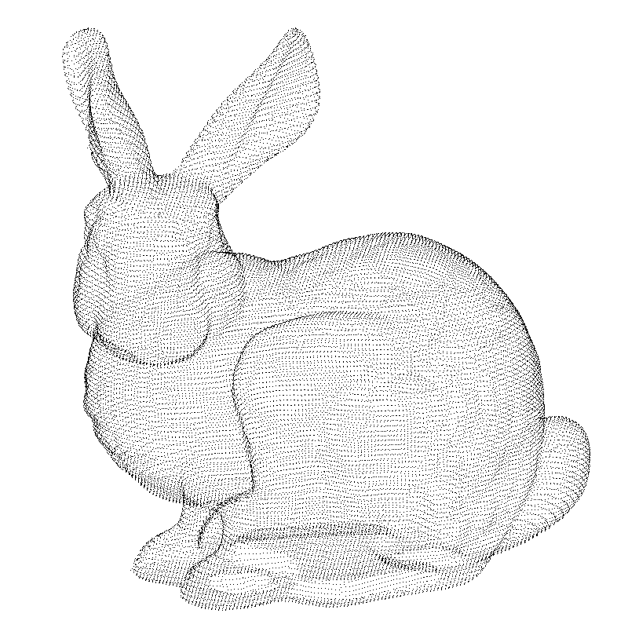
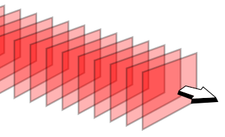
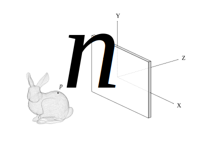
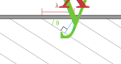

Note: This guide assumes the reader already knows what a hologram is and, in broad terms, the basic principles of how to make one.
So, we have a 3D object which we want a hologram of. To do that, we first decompose the object into a large number of points, which we approximate as spherical light sources (for now we ignore the opacity of the object, which would make the front points to block the light from the back ones from reaching the holographic plate).
 ➔ To make the hologram, we also need a reference wave, which will act as the "key" to decode the interference pattern that we will generate. The reference wave is a plane wave, i.e. it can be thought of as a series of parallel planes spread apart by the wavelength $\lambda$, each corresponding to a crest in the wave.

Our system of coordinates will be the left-handed cartesian, with X pointing to the right, Y pointing up, and Z pointing forward (from the object to the hologram). The hologram will be a plane centered at the origin of the system of coordinates, and perpendicular to the Z axis (i.e., it will be the XY plane).
Given the above, we'll define the following elements for our calculations:
To start, we know that the value of a single wave at the origin of the coordinate system at instant $t$ is \[ A \times \cos(\omega t - \varphi) \]...where $A$ is the amplitude (maximum height) of the wave, $\omega$ is the temporal angular frequency of the wave (i.e. how many cycles, in radians, the wave completes per unit of time) and $\varphi$ is the initial phase (angle) of the wave at the origin. So both $\omega t$ and $\varphi$ are angles, which are subtracted to yield the real phase angle of the wave at instant $t$.
Using this formulation, the amplitude of the whole compound object wave, made up of all $N$ object points, at a given point $h$ of the hologram and a given time $t$, is given by simply summing all contributions together:
\[ obj(h,t)=\sum_n^N A_n \cos(\omega t - \varphi_n) \] Here, $\varphi_n$ is the initial phase (at $t=0$) of the spherical wave emitted from point $n$ at hologram point $h$. It depends on the distance from the object point to the hologram point being considered, which is calculated using the familiar Euclidean distance formula: \[ r_n(h) = \sqrt{(p_{nx} - h_x)^2 + (p_{ny} - h_y)^2 + p_{nz}^2} \](remember that $h_z$ is zero, because we placed the hologram plane at $z=0$).
This distance (called "r" to underline its meaning as the radius of the light sphere emitted from the $n^{th}$ point) is then multiplied by the angular spatial frequency of the wave (i.e. how many cycles, in radians, the wave completes per unit of distance), which is abbreviated as $k = \tau/\lambda$, and —somewhat unhelpfully— called the "wavenumber". This multiplication, $k \times r_n(h)$, like the $\omega \times t$ one, yields a phase angle, so both values can be subtracted to yield the phase of the wave $p_n$ at point $h$ and instant $t$.
Note that here we're considering that the wave is leagving the object point at phase zero, which is not true: because the object is not self-luminous, but rather is reflecting the reference wave towards the hologram, the initial phase at the object point will depend on its position along the direction of propagation of the wave, so the initial phase at the hologram point naturally depends on this as well. Ideally we would subtract it, as in $k r_n(h) - \varphi_{n0}$. However, (TODO: copy from google docs)
The formula above then becomes: \begin{equation} obj(h,t)=\sum_n^N A_n \cos(\omega t - k r_n(h)) \label{eq:obj} \end{equation} Note how the duality of this generic formula can be exploited to calculate both the variation of the object wavefront in space (i.e. across the hologram), at a given instant frozen in time, by varying $h$ and keeping $t$ constant, and to calculate the variation of the object wavefront at a fixed hologram point, by varying $t$ and keeping $h$ constant.As may be noted, the above formula is just for the compound object wave. We still need to add the reference wave to get the complete wavefront that will form the hologram.
As we mentioned above, the reference wave is a planar wave (TODO: explain why), so it's formula can't be defined as based on the distance of its center, like for the spherical point waves, because by definition, a planar wave is a wave whose focal point is at an infinite distance, so the curvature of its wavefronts is zero. What we do, instead, is define it by the angles it makes with the hologram plane.
This is done using two angles: $\theta_y$, aka "yaw", which represents its rotation around the (vertical) Y axis (like a head turning side to side), and $\theta_x$, aka "pitch", which represents its rotation around the (horizontal) X axis (like a head nodding up and down).
Let's start by considering $\theta_x=0$ and seeing what happens as we change $\theta_y$:

This image shows a top-down view of the scene, assuming the reference wave only changes in "yaw", so subsequent wavefronts, although planar, would be seen as parallel lines from the top. As you can see, if we adjust the angle $\theta_y$, although the wavelength $\lambda$ would remain the same, the distance between two wave crests in the hologram plane would change. In other words, it's the projection of $\lambda$ into the X axis. We'll call this $\lambda_x$.
Using elementary trigonometry, we can see that, using the definition of the sine of an angle as opposite/hypotenuse, we obtain the relationship $\sin(\theta_y) = \lambda/\lambda_x$, and therefore, $\lambda_x = \lambda/\sin(\theta_y)$.
Now, having the wavelength of the reference wave along the hologram plane, we can, for every location $h_x$, obtain the value of the wave (i.e. its phase). For example, assuming the wave's phase at $h_x=0$ is zero, the wave will have completed a full cycle (thus the phase will be zero again) at $h_x=\lambda_x$. So, to get the reference wave phase at any given $h_x$, we just divide it by $\lambda_x$.
Of course, this gives us a fractional value, a linearly growing value representing the number of cycles completed as we advance $h_x$. To pass this value to the cosine function and thus get the amplitude of the wave, we need to convert this to radians, which we do by multiplying the fractional value by $\tau$. The formula for a (yaw-only) reference wave is thus:
\[ A_ʀ \cos ( \omega t - \frac{h_x}{\lambda_x} \tau ) \]The same reasoning can be made for the case where we vary $\theta_x$ and keep $\theta_y=0$ — we obtain $\lambda_y = \lambda / \sin(\theta_x)$. So putting it all together, for the general case where both $\theta_x \neq 0$ and $\theta_y \neq 0$:
\[ A_ʀ \cos \left[ \omega t - \left( \frac{h_x}{\lambda/\sin(\theta_y)} \tau + \frac{h_y}{\lambda/\sin(\theta_x)} \tau \right) \right] \] By rearranging the pieces, and because $k=\tau/\lambda$, this becomes: \[ A_ʀ \cos \left[ \omega t - k \left( h_x \sin(\theta_y) + h_y \sin(\theta_x) \right) \right] \] To make this similar to the object wave function, we can abstract away the inner sum that's multiplied by $k$ into a function $p$ (named that way to stress its meaning as the projection of the reference wave into the hologram plane): \[ p_ʀ(h) = \left( h_x \sin(\theta_y) + h_y \sin(\theta_x) \right) \] thus yielding the reference wave formula: \begin{equation} ref(h,t)=A_ʀ \cos ( \omega t - k p_ʀ(h) ) \label{eq:ref} \end{equation}However, this only gives us the instantaneous interference pattern created from the interaction of all these waves at a given moment $t$. The actual hologram is the result of the static "nodes" created when coherent waves interact. These nodes will have zero activity, while other points in the hologram will register oscillations.
Now, although these oscillations have all the same period, because the waves are coherent, their peaks and valleys will occurr at different stages of the "global" cycle. And each of these oscillation zones will have the value zero at the right time in their cycle. So that makes it impossible, in an instant snapshot, to distinguish permanently static zones from zones that only happen to be passing through zero at that moment.
To solve this, we have to calculate the interference pattern for all possible phase positions of the global cycle and accumulate any activity, to make the oscillation zones unambiguously distinguishable from the true, static nodes of the interference pattern.
The straightforward way to do that is to discretize the phase space into a finite set of regularly-spaced phase values, calculate the interference pattern at each phase value, and sum them all to yield the hologram.
Note that, precisely because each oscillation in the pattern occurs over the same length of time, and because the oscillations consist in the wave cycling between positive and negative values, simply summing the interference pattern over a wave cycle would result in zero everywhere. We need to make sure the values we're summing actually accumulate, rather than cancel out.
Fortunately, what the holographic plate registers is intensity, not amplitude, and intensity is proportional to the amplitude squared. The squaring, conveniently, provides us with only positive values, which can indeed be summed and accumulated properly.
The cumulative interference pattern (i.e., the actual hologram) is thus obtained by: \begin{equation} holo(h) = \sum_t^T \left[ \sum_n^N A_n \cos(\omega t - k r_n(h)) + A_ʀ \cos ( \omega t - k p_ʀ(h)) \right]^2 \label{eq:hologram} \end{equation}This is all we need to make the hologram! Since we're talking about computer-generated holograms, it is appropriate to present the above equation in the form of a computer algorithm. So, in pseudo-code, the equation above translates to:
var phaseSteps = 100
var holoPixels = 500
var objectPoints = [
{x: ..., y: ..., z: ...},
{x: ..., y: ..., z: ...},
{x: ..., y: ..., z: ...} ]
var amplitude[], intensity[], hologram[]
for i = 0 --> phaseSteps {
phase = i/phaseSteps * 2*pi
for h = 0 --> holoPixels {
amplitude[ h ] += ref-amplitude( h, phase )
for each point in objectPoints {
amplitude[ h ] += obj-amplitude( h, phase, p )
}
intensity[ h ] = amplitude[ h ]^2
}
hologram[] += intensity[]
}
# Normalize
hologram[] /= max( hologram[] )
# Auxiliary functions
ref-amplitude( h, phase ) {
...
}
obj-amplitude( h, phase, p ) {
...
}
But this is a rather naive approach, which not only introduces a loss of precision in the quantization of both the object and the phase space, but also requires a calculation over a given length of time — in other words, it essentially implements an exposure period.
In the next chapter, we will explore ways to make this calculation both more exact and faster. Onward!